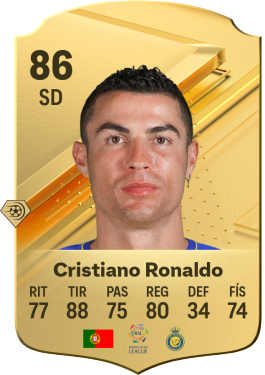
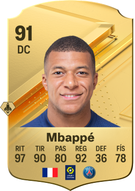
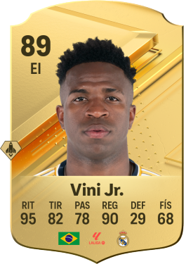
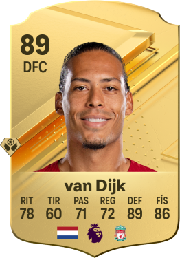
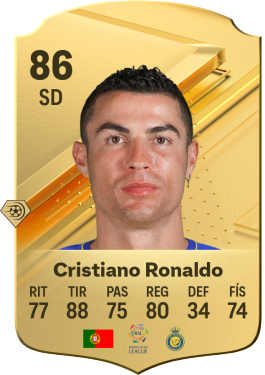
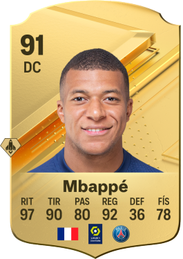
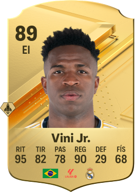
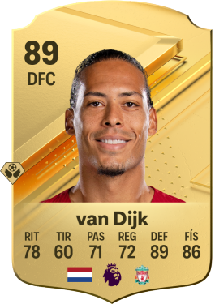

Últimas Noticias
Descubre las últimas novedades y actualizaciones en el mundo de FIFA.
LA MEJOR WEB PARA ESTAR INFORMADOS SOBRE FC24
Descubre las últimas novedades y actualizaciones en el mundo de FIFA.
| Nombre | Posición | Puntuación |
|---|---|---|
| Lionel Messi | Medio Centro Izquierdo | 92 (Promocion Radioactividad) |
| Cristiano Ronaldo | Delantero Centro | 88 (Promocion Vanguardista) |
| Kilian Mbappe | Delantero Centro | 92 (Promocion Jugador del mes de LIGE1) |
| Vini Jr | Extremo izquierdo | 90 (ICONO BASICO) |
| Van Dijk | Defensa Central | 89 (Promocion nike) |
 
